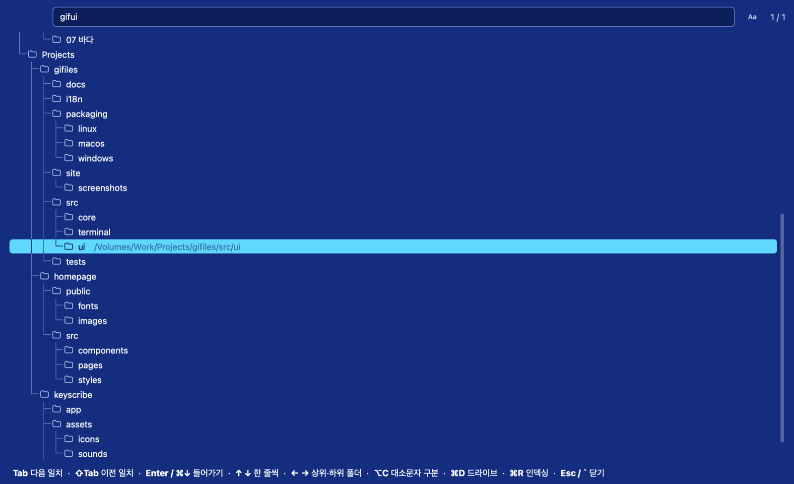

macOS 파인더의 사용감을 다른 플랫폼에서도 쓰고 싶어 만든 유틸리티입니다. 자주 쓰는 기능 위주로 정리했고, 예전 MDIR 감성을 조금 끼얹었습니다. 터미널과 통합해 파일을 관리할 수 있습니다.
>> 다운로드 <<

여러 파일 매니저를 써 봤지만, 그중 맥 파인더가 가장 심플하면서도 최적화된 사용성이라고 생각해 기준으로 삼았습니다. 목록·갤러리·컬럼 세 가지 보기와 ⌘1 · ⌘2 · ⌘3, Space 미리보기, Return 이름 바꾸기, ⌘↓ 열기까지 Finder 그대로입니다. 윈도우와 리눅스에서도 같은 키를 쓰고, ⌘ 자리에 Ctrl을 누르면 됩니다.


맥에서 작업하다 보면 생각보다 터미널 작업이 많아지는데, 그때마다 따로 띄우기 번거로워서 지금 보고 있는 폴더와 바로 연동되는 터미널 패널을 아래에 붙였습니다. 폴더를 옮기면 터미널이 따라 cd 하고, 터미널에서 cd 하면 목록이 따라옵니다.

옛 노턴 유틸리티의 NCD처럼 ` 키 하나로 드라이브의 모든 폴더를 파란 화면의 트리로 띄웁니다. 경로 글자를 차례로 치면(gifui → gifiles/src/ui) 바로 그 폴더로 커서가 가고, Enter로 이동합니다. 폴더 목록은 백그라운드에서 알아서 최신으로 유지됩니다.

Mdir처럼 확장자마다 파일 이름에 색을 입혀 실행 파일, 압축 파일, 문서, 코드를 한눈에 구분합니다. 색과 확장자 묶음은 설정에서 바꿀 수 있고, 다크 모드에 맞춘 색이 라이트 모드에서는 자동으로 진해집니다.

Space를 누르면 이미지·영상·음악·PDF·코드를 바로 보고, 방향키로 다음 파일로 넘어갑니다. 오피스 문서처럼 직접 그리지 못하는 파일은 운영체제의 미리보기를 그대로 씁니다.

Codex나 Claude CLI가 설치돼 있으면 선택한 파일을 바로 명령으로 넘길 수 있습니다. 이미지 변환이나 회전, 파일 이름 일괄 변경 같은 작업을 요청 한 줄로 한 번에 끝냅니다.

자주 하는 반복 작업은 셸 스크립트나 명령어를 사용자 메뉴로 묶어 두면, 선택한 파일에 손쉽게 적용할 수 있습니다.


Windows 앱은 서명되지 않아 처음 실행할 때 경고가 뜰 수 있습니다(추가 정보 → 실행).